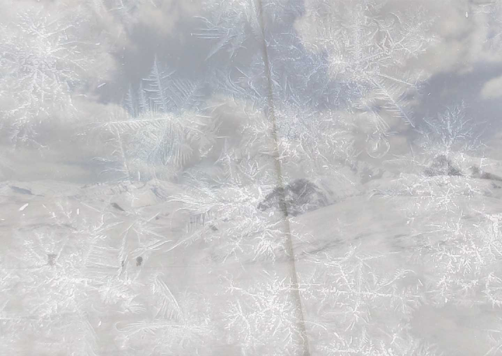
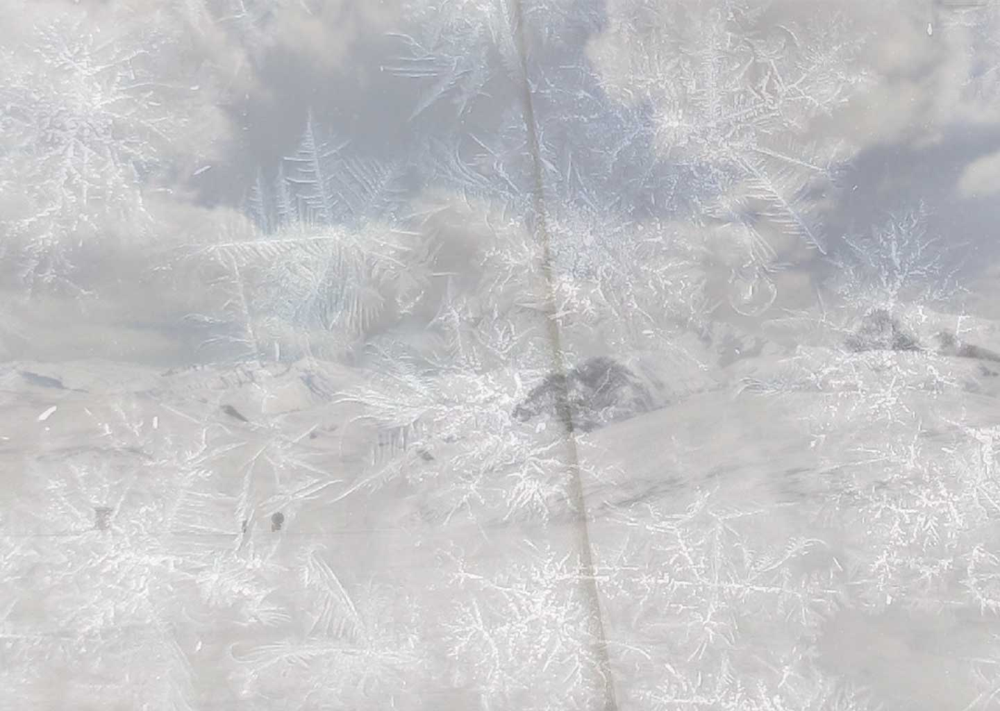

to the four winds
and buried
dust become soil become stone
and inlaid there
There are three basic relationships in xanalogical storage: origin, the parts where elements begin; commonality, the sharing of elements between units; and links, which mark, annotate and connect portions of units.